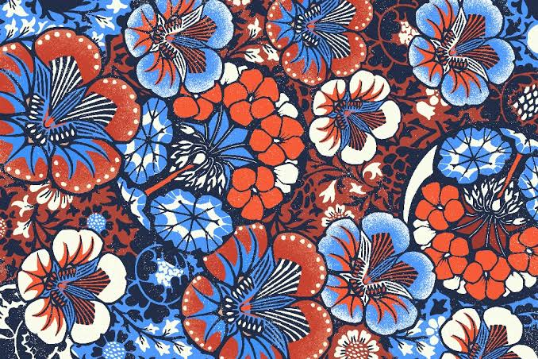

Eksplorasi Budaya
Jelajahi warisan budaya Indonesia yang dipadukan dengan teknologi digital modern. Pilih tradisi berikut untuk melihat simulasi interaktif.

Wayang Cyber Art
Wayang Kulit Generative
Pertunjukan bayangan klasik yang diproyeksikan menggunakan teknologi AI untuk merespons ketukan gamelan secara real-time.

Motion Mapping
Kecak Light Audio
Harmoni suara "Cak" berpadu dengan efek sensor gerak tubuh yang memancarkan pendaran cahaya hologram api spektakuler.

Interactive Canvas
Membatik Piksel Virtual
Gunakan pointer atau jarimu sebagai canting digital untuk merancang pola batik Parang kreasimu sendiri di kanvas digital.